Symbolic-TS
Time series as a symbolic languageZaman serilerini sembolik bir dil olarak modellemek
*a feasibility gate first, a leakage-guarded library second**önce bir fizibilite kapısı, ardından sızıntıya karşı korumalı bir kütüphane*My M.Sc. thesis changes time series into tokens from one fixed vocabulary for small language models. Phase 0 showed real shared structure between financial and industrial sensor data, with two caveats. The core library prevents leakage with train-only binning, purged splits and invariant tests in CI.
Yüksek lisans tezimde zaman serilerini, küçük dil modellerinin öğrenebileceği sabit bir token sözlüğüne çeviriyorum. Faz 0, finansal veriler ile endüstriyel sensör verileri arasında iki çekinceyle birlikte gerçek bir ortak yapı olduğunu gösterdi. Çekirdek kütüphane ise yalnızca eğitim verisine göre yapılan binning, purged split'ler ve CI'daki değişmezlik testleriyle veri sızıntısını engelliyor.
- thesistez
- Modelling Time Series as a Symbolic Language: Small Language Models for Cross-Domain Transfer on Edge Hardware · Gazi UniversityZaman Serilerini Sembolik Bir Dil Olarak Modellemek: Edge Donanımda Alanlar Arası Transfer için Küçük Dil Modelleri · Gazi Üniversitesi
- stackteknolojiler
- Python · pandas · NumPy · statsmodels · pytest · GitHub Actions
1. The research question1. Araştırma sorusu
A small language model can learn discrete tokens in the same way that it learns words. Thus I can change a numeric time series into tokens and train a small model on them. If the vocabulary does not depend on the domain, a model can learn on one domain and operate on a different domain.
My thesis tests this idea with two unrelated domains. The first domain is financial returns. The second domain is an industrial sensor dataset (ETT). A transfer claim is easy to make before anyone checks that the two domains share real structure. Thus the thesis starts with a feasibility gate.
Küçük bir dil modeli, ayrık token'ları tıpkı kelimeler gibi öğrenebilir. O halde sayısal bir zaman serisini token'lara çevirip küçük bir modeli bunlarla eğitmek mümkün. Sözlük belirli bir alana bağlı olmazsa, bir alanda öğrenen model başka bir alanda da çalışabilir.
Tezim bu fikri birbiriyle hiçbir ilgisi olmayan iki alan üzerinde sınıyor: finansal getiriler ve endüstriyel bir sensör veri seti (ETT). Alanlar arası transfer iddiasında bulunmak, iki alanın gerçekten ortak bir yapı paylaşıp paylaşmadığını kontrol etmekten çok daha kolay. Bu yüzden tez bir fizibilite kapısıyla başlıyor.
No model training starts before the data shows a shared structure between the two domains.
Veri iki alan arasında ortak bir yapı olduğunu göstermeden hiçbir model eğitimine başlanmıyor.
2. Constraints2. Kısıtlar
- Edge hardware: The final model must run on consumer hardware, not on cloud GPUs.
- No leakage: A token must not contain information from the future or from the test set.
- Reproducibility: A script and a result file must produce each number in the thesis.
- Edge donanım: Nihai model bulut GPU'larında değil, sıradan tüketici donanımında çalışabilmeli.
- Sızıntı olmamalı: Hiçbir token gelecekten ya da test setinden bilgi taşımamalı.
- Tekrarlanabilirlik: Tezdeki her rakamın arkasında onu üreten bir script ve bir sonuç dosyası olmalı.
3. Phase 0: feasibility3. Faz 0: fizibilite
Phase 0 asked one question: does a symbolic representation carry real shared structure between the two domains? I checked each finding for the specific ways that it can be an artefact.
Faz 0 tek bir soruya cevap aradı: Sembolik bir temsil, iki alan arasında gerçekten ortak bir yapı taşıyor mu? Her bulguyu, bir ölçüm hatasından ya da yöntemin kendisinden kaynaklanıp kaynaklanmadığını kontrol ederek değerlendirdim.

- Stationarity: Neither domain is stationary at raw level. First differences make both domains stationary.
- Vocabulary: The two domains use a comparable token vocabulary. The effect size is small (Cramér's V = 0.108).
- Structure: Conditional structure explains about 41–47% of the marginal entropy of each domain. Thus the sequences are not random.
- Context window: PACF gives a window of 50 steps. The ACF estimate of 150 steps was too long, because a rolling-window artefact increased it.
- Transfer penalty: A real cross-domain penalty exists. It occurs only at Markov orders 4–5 and only from ETT to finance.
- Durağanlık: İki alan da ham haliyle durağan değil; birinci farklar alındığında ikisi de durağan hale geliyor.
- Sözlük: İki alanın token dağılımları birbirine oldukça yakın. Etki büyüklüğü küçük (Cramér's V = 0,108).
- Yapı: Koşullu yapı, her alanın marjinal entropisinin yaklaşık %41–47'sini açıklıyor. Yani diziler rastgele değil.
- Bağlam penceresi: PACF'e göre uygun pencere 50 adım. ACF'nin önerdiği 150 adım fazla uzundu; kayan pencere hesabından kaynaklanan bir etki bu değeri şişiriyordu.
- Transfer cezası: Alanlar arasında gerçek bir performans kaybı var, ancak yalnızca 4–5. dereceden Markov modellerinde ve yalnızca ETT'den finansa geçişte ortaya çıkıyor.
The verdict was "proceed with two named caveats". The higher-order penalty is now a precise target. In Phase 4, "transfer works" must mean that the model closes this specific gap.
Sonuç "iki çekinceyle devam" oldu. Yüksek dereceli modellerdeki bu kayıp artık net bir hedef: Faz 4'te "transfer çalışıyor" diyebilmem için modelin tam olarak bu farkı kapatması gerekiyor.
4. The core library4. Çekirdek kütüphane
The library changes any series into tokens from one fixed vocabulary. project() reads one base column and makes two channels: change and volatility. A binner changes each channel into a level. The library joins the two levels into a compound token, for example C2_V1.
Kütüphane her türlü seriyi tek bir sabit sözlüğe ait token'lara çeviriyor. project() bir temel sütunu okuyup ondan iki kanal üretiyor: değişim ve volatilite. Bir binner her kanalı bir seviyeye dönüştürüyor, kütüphane de bu iki seviyeyi C2_V1 gibi bileşik bir token'da birleştiriyor.

5. Key decisions and trade-offs5. Önemli kararlar ve ödünleşimler
| DecisionKarar | Alternative I consideredDeğerlendirdiğim alternatif | ReasonNeden |
|---|---|---|
| Two channels: change and volatilityİki kanal: değişim ve volatilite | Three channels with a level channelSeviye kanalını da içeren üç kanal | A level is not stationary. Fixed thresholds from training data do not apply to a level that grows.Seviye durağan değil. Eğitim verisinden çıkarılan sabit eşikler, zamanla büyüyen bir seviyeye uygulanamıyor. |
| Log returns for financeFinans için log getiri | Raw price differencesHam fiyat farkları | Raw differences follow the price level of the training period. Log returns do not.Ham farklar eğitim dönemindeki fiyat seviyesine bağlı kalıyor; log getiriler kalmıyor. |
| Domain adapters as configurationAlan adaptörlerini yapılandırma olarak tanımlamak | An if domain == ... branchKod içinde if domain == ... dalları | The function stays the same for all domains. A new domain needs only a new ProjectionConfig.Fonksiyon bütün alanlar için aynı kalıyor. Yeni bir alan eklemek için yeni bir ProjectionConfig tanımlamak yetiyor. |
| PACF context window of 50PACF'e dayalı 50 adımlık bağlam penceresi | Placeholder of 30 or ACF estimate of 15030 adımlık geçici değer ya da ACF'nin önerdiği 150 adım | PACF removes the indirect correlation that inflated the ACF estimate.PACF, ACF tahminini şişiren dolaylı korelasyonu ayıklıyor. |
The leakage fixSızıntının giderilmesi
An earlier prototype fitted its bins on the full series. Thus future information went into every token. I built the library around this mistake.
İlk prototip, bin sınırlarını serinin tamamı üzerinden hesaplıyordu. Bu da gelecekteki bilginin her token'a sızması demekti. Kütüphaneyi bu hatayı bir daha yapmayacak şekilde baştan kurdum.

- The binner fits its sigma thresholds on the training split only.
- Purged walk-forward splits keep a gap between the training and test periods.
- A hashed test-set lock prevents an accidental look at the test set.
- Binner, sigma eşiklerini yalnızca eğitim verisi üzerinden hesaplıyor.
- Purged walk-forward split'ler eğitim ve test dönemleri arasında bir boşluk bırakıyor.
- Hash'lenmiş bir test seti kilidi, test verisine yanlışlıkla bakılmasını engelliyor.
6. Testing and reproducibility6. Test ve tekrarlanabilirlik
- Invariant tests in CI check leakage, determinism and split integrity.
- Model comparisons use McNemar and Diebold–Mariano tests, not bare accuracy.
- The datasets are frozen, hashed and recorded in a manifest.
- The research scripts call the library code. After this change, I ran the scripts again. All three result files were byte-identical to the Phase 0 versions.
- CI'daki değişmezlik testleri sızıntıyı, deterministik çalışmayı ve split'lerin bütünlüğünü denetliyor.
- Modeller çıplak doğrulukla değil, McNemar ve Diebold–Mariano testleriyle karşılaştırılıyor.
- Veri setleri sabitlenmiş, hash'lenmiş ve bir manifest dosyasına kaydedilmiş durumda.
- Araştırma script'leri artık kütüphanenin kodunu çağırıyor. Bu değişiklikten sonra script'leri yeniden çalıştırdım; üç sonuç dosyası da Faz 0'daki halleriyle byte byte aynı çıktı.
7. Results so far7. Şimdiye kadarki sonuçlar
8. Limitations and next steps8. Sınırlar ve sonraki adımlar
- The transition-matrix gap is sensitive to the daily-aggregation method. I must check it again with the real Phase 1 binning.
- No model is trained yet. The transfer matrix and the significance tests belong to Phase 4.
- Next step: use the library in the applied demo, Finwise Scribe.
- Geçiş matrisleri arasındaki fark, günlük verinin nasıl toplandığına duyarlı. Bunu Faz 1'in gerçek binning yöntemiyle yeniden kontrol etmem gerekiyor.
- Henüz hiçbir model eğitilmedi. Transfer matrisi ve anlamlılık testleri Faz 4'ün konusu.
- Sıradaki adım: kütüphaneyi uygulamalı demo olan Finwise Scribe'a entegre etmek.
9. Design Q&A9. Tasarım üzerine sorular
Why did you not train a model first?Neden önce bir model eğitmedin?
A training run can show a result even when the two domains share no real structure. Phase 0 checks the data first. Thus the training budget goes to a hypothesis that the data supports.
İki alan gerçekte hiçbir yapı paylaşmasa bile bir eğitim süreci sonuç üretiyormuş gibi görünebilir. Faz 0 önce veriye bakıyor; böylece eğitim bütçesi verinin gerçekten desteklediği bir hipoteze harcanıyor.
How did you find the leakage in the prototype?Prototipteki sızıntıyı nasıl fark ettin?
The prototype fitted the bin thresholds on the full series. The thresholds therefore knew the distribution of future values. I moved the fit to the training split and added invariant tests in CI.
Prototip bin eşiklerini serinin tamamı üzerinden hesaplıyordu; yani eşikler gelecekteki değerlerin dağılımını önceden biliyordu. Hesaplamayı yalnızca eğitim verisine taşıdım ve CI'a bunu denetleyen değişmezlik testleri ekledim.
Why PACF and not ACF for the context window?Bağlam penceresi için neden ACF değil de PACF?
ACF includes indirect correlation. A rolling-window statistic made the ACF decay slowly, so it suggested 150 steps. PACF removes the indirect part and gave 50 steps.
ACF dolaylı korelasyonları da hesaba katıyor. Kayan pencereyle hesaplanan bir istatistik ACF'nin çok yavaş sönümlenmesine yol açtı ve 150 adımlık bir pencere önerdi. Dolaylı etkiyi ayıklayan PACF ise 50 adım verdi.
What does a negative result mean for the thesis?Sonuç olumsuz çıkarsa tez için ne anlama gelir?
The target is precise: close the higher-order penalty from ETT to finance. If the model cannot close it, the thesis reports that result with the statistical tests.
Hedef net: ETT'den finansa geçişteki yüksek dereceli kaybı kapatmak. Model bunu başaramazsa tez bu sonucu istatistiksel testleriyle birlikte olduğu gibi raporlayacak.
Core libraryÇekirdek kütüphane ↗ Research repositoryAraştırma reposu ↗